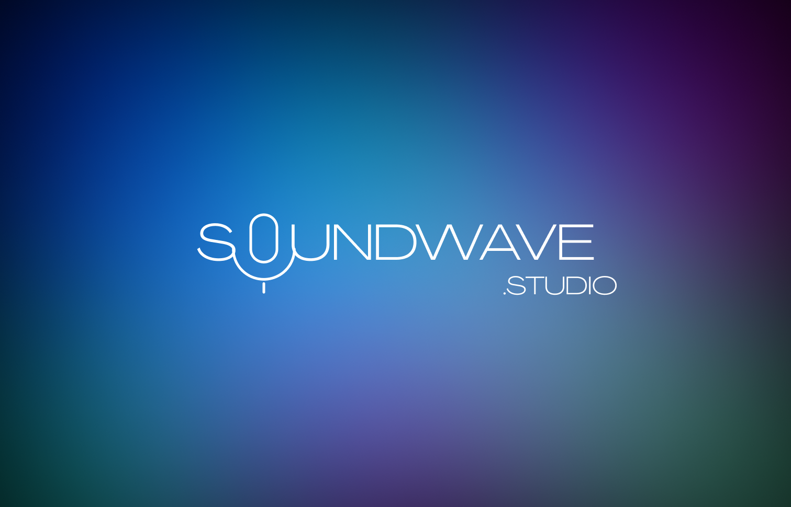
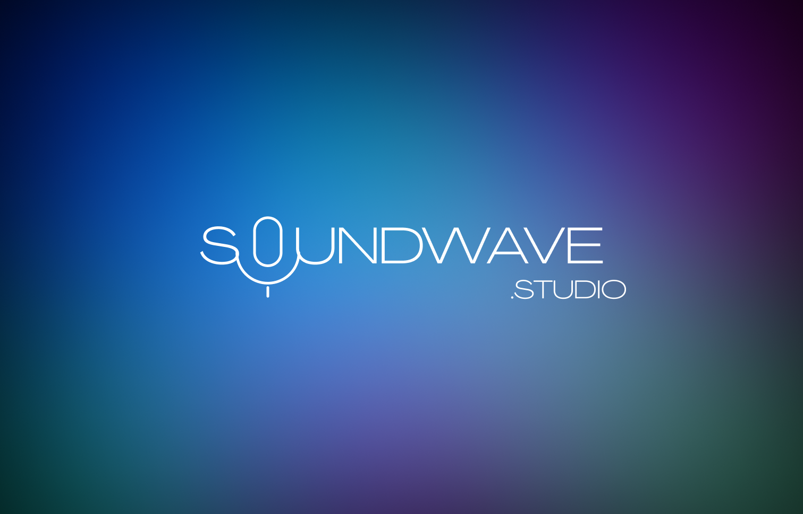
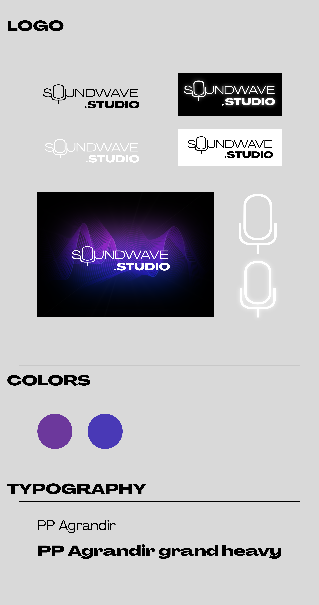
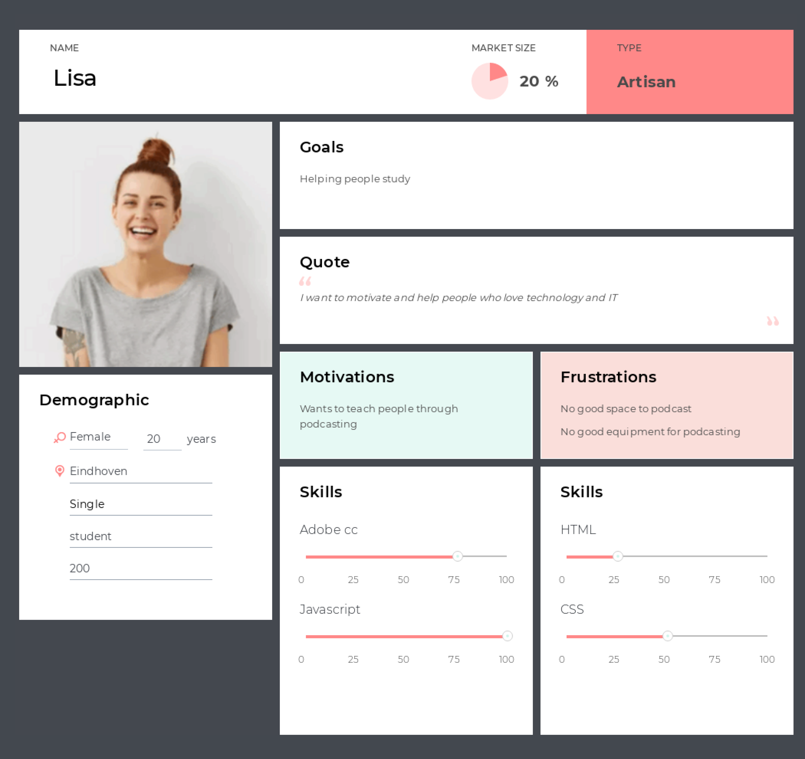
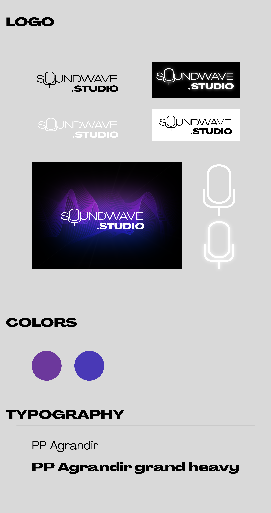
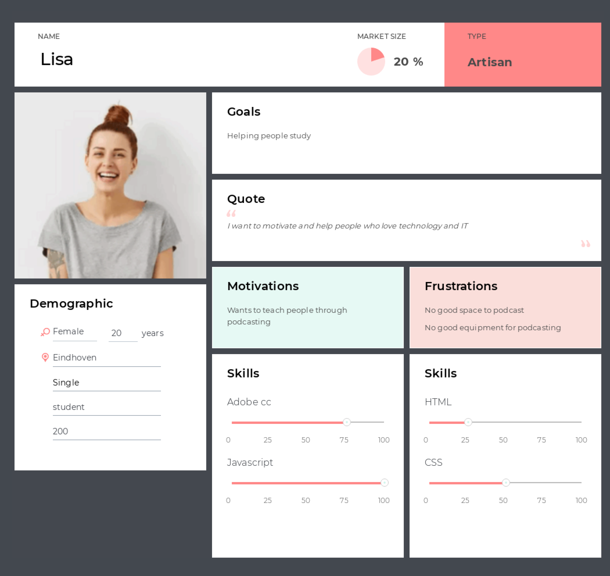
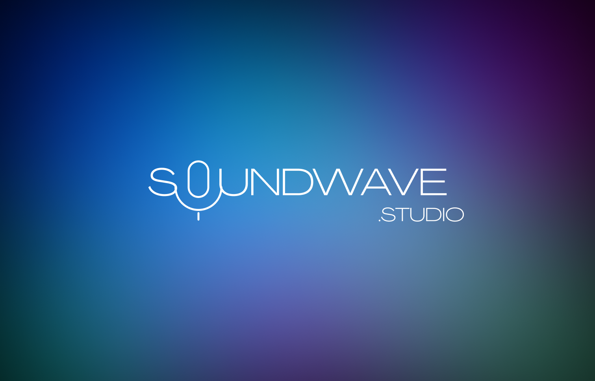
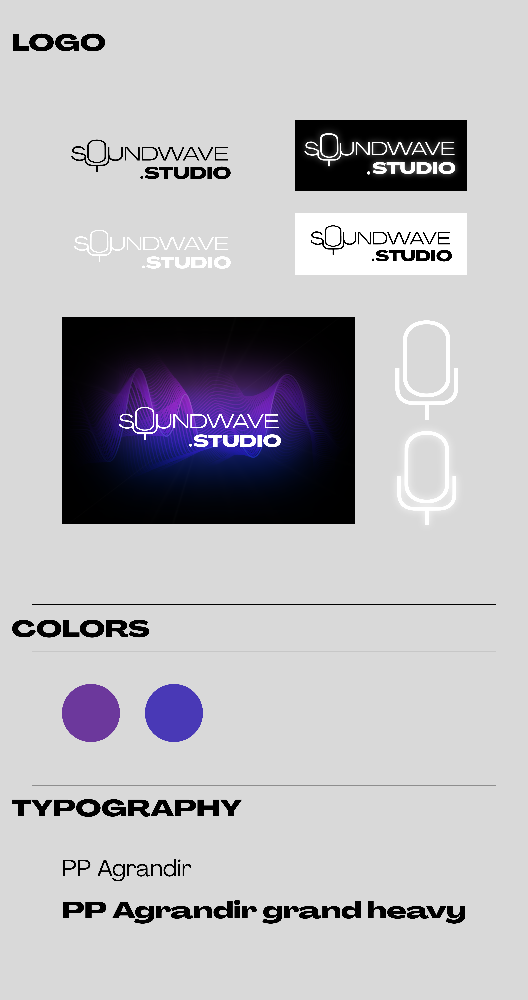
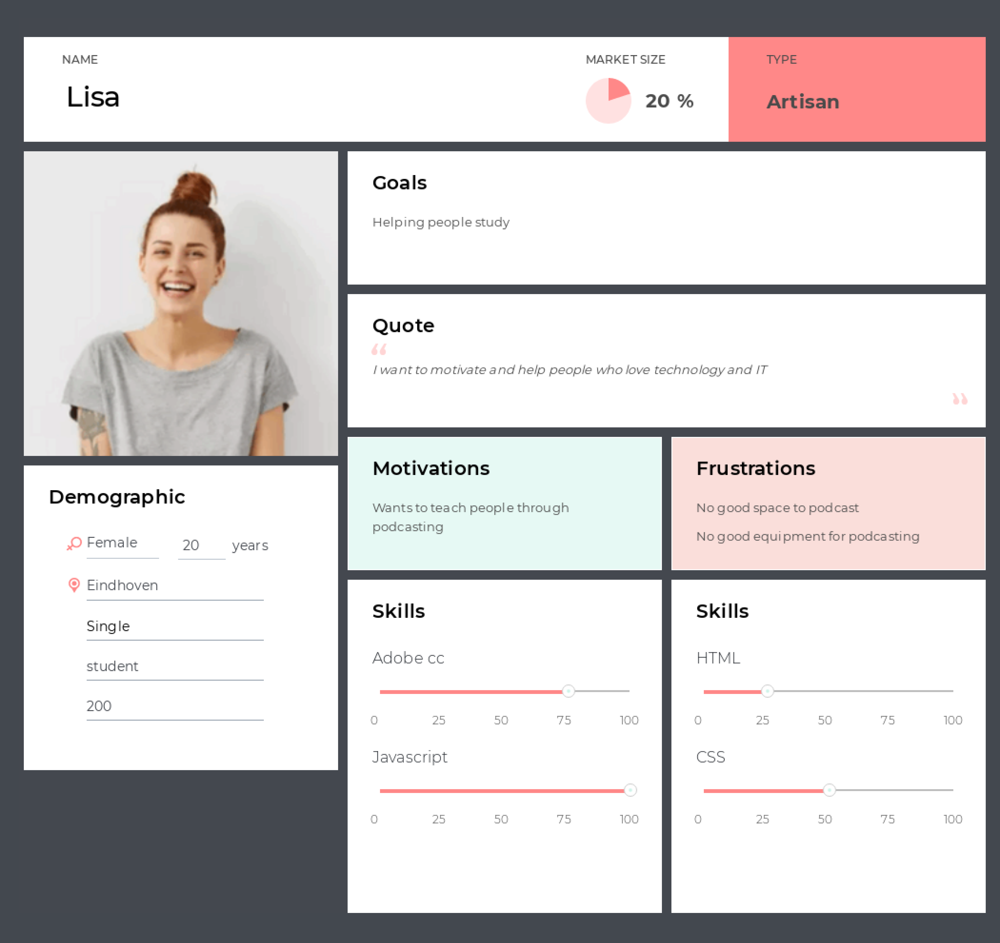

BRONNEN
AFBEELDINGEN
 

 



Voor mijn portfolio heb ik veel feedback gevraagd over de site. Ook heb ik een usertest gedaan met een aantal mensen. Dit heb ik gedaan
met een interactief prototype in figma. Ook heb ik mijn site gebruikt als prototype. Ik heb feedback gekregen wat beterft de navbar en hoe die naar
delen van de pagina navigeert. De navbar was niet heel erg net en iets te veel, hiervoor heb ik de opacity aagepast en een border gegeven.
Verder scrollde de site niet goed naar de delen van de pagina, dit heb ik aangepast met een padding zodat de navbar niet op de titel ligt.
Nadat ik alle feedback heb toegepast was alles goed leesbaar en duidelijk. Ook past de navbar nu beter bij de site en is minder storend.
Hier heb ik veel gespeeld met logo's en die samen met Loes laten zien aan de stakeholder en studenten. Hier hebben we een cmd method gebruikt, een survey.
Met die survey konden ze kiezen tussen de logo's en feedback geven. Met die feedback kwamen
vooral twee logo's terug. Hiermee kon ik op basis van de feedback en logo's een nieuw logo maken.
Mijn logo is alleen niet het definitieve logo geworden. Wel heb ik de poster gemaakt waar we van de
stakeholder feedback kregen. Die heb ik toen ook toegepast en een nieuwe gemaakt, dat werd de definitieve poster.
Dankzij de cmd method prototyping kwamen we erachter dat het logo niet goed leesbaar was op een shirt of trui. Als je het logo op een shirt of trui zou zetten bijvoorbeeld
dan zou de tekst moeilijk te lezen zijn en de soundwave zou pixelig worden. Ook hebben we feedback aan de stakeholder gevraagd en die gaf ons gelijk.
Hiervoor hebben we als oplossing om alleen de text te gebruiken op een shirt of trui, de naam staat er nog op zonder
dat de soundwave het verstoort.
Hier heb ik gekeken wat voor media platform de studenten van de deeltijd opleiding het meest
gebruiken, dit heb ik gedaan met de interview die Job heeft gehouden.
Door de interview cmd method te doen krijg je te weten waar je het beste reclame kan maken
voor de opleiding. Ook heb ik gekeken naar wat voor informatie de studenten misten, maar toch graag
willen weten voor ze de opleiding beginnen.
Hiermee heb ik een LinkedIn post kunnen maken die hun zou aantrekken.
Wel moest dit in de huiststijl van Fontys, dit kon ik vinden op de site (site staat vermeld onder aan de pagina).
Als ontwerp platform heb ik Adobe Illustrator gebruikt. We hebben de ontwerpen van alle posts aan de stakeholder laten
zien, zij gaf als feedback dat het er net uit zag en wilt de methode ook uitproberen.


